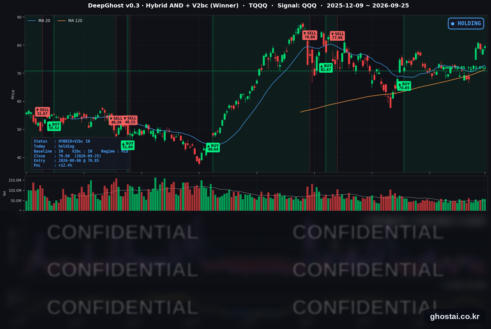

나스닥 주간 +2.1%, 10년물 금리 5.2%
· Ghost.AI 데일리 리포트
👻 매일 시그널과 히스토리를 홈페이지에서 한눈에 → www.ghostai.co.kr
회원 페이지 안내 — 회원 가입하시면 커버리지 전 종목의 원본 시그널과 분석 레포트를 매일 확인하실 수 있습니다. 회원 페이지는 블로그·유튜브보다 먼저 업데이트됩니다. 선착순 100명을 모집하고 있으며, 이메일과 필명만으로 가입하실 수 있고 서비스 사용료는 받지 않습니다. 가입 신청 후 운영자 승인을 거쳐 이용하실 수 있습니다.
S&P 500 구성종목의 65%가 올라 이번 주 들어 가장 많은 종목이 함께 올랐습니다. 한 주 전체로는 나스닥이 +2.06%로 8월 7일로 끝난 주 이후 가장 많이 올랐지만, S&P 500 구성종목의 절반 넘게는 내렸습니다. 같은 기간 10년물 금리는 사흘 연속 2007년 이후 최고 종가를 새로 썼고, 30년물은 2004년 이후 처음 5.5% 위에서 마감했습니다. 금리가 최고치인데 주식이 오르는걸 보면 고금리의 뉴노멀 시대에 적응을 해가고 있습니다. 물론 고성장이 뒷받침되어야 하겠지요. AI 기술주들의 고성장에 대한 의심의 여지는 없겠습니다.
📊 오늘의 매매 신호
| 항목 | 내용 |
|---|---|
| 오늘 할 일 | ✅ 아무것도 안 해도 됩니다 |
| 포지션 상태 | 📈 TQQQ 보유 중 (IN POSITION) |
| 매수 진입일 | 2026-08-06 (36거래일째) |
| 진입가 → 현재가 | $70.85 → $79.60 |
| 현재 포지션 수익 | +12.35% |
TQQQ 시그널 — IN POSITION
현재 상태: 매수 포지션 유지 중 | 이번 포지션 수익 +12.35%

나스닥100(QQQ)이 +0.46% 오르면서 TQQQ는 +1.30% 상승한 79.60달러로 마감했습니다. 전략의 평가수익률은 전 거래일 +10.91%에서 +12.35%가 됐습니다. 전략은 보유를 유지했고, 모델 기준으로 매도 신호까지의 여유는 전일과 거의 같습니다.
한 주로 보면 TQQQ는 72.64달러에서 79.60달러로 +9.58% 올랐고, 전략의 평가수익률은 지난주 금요일 +2.53%에서 +12.35%로 늘었습니다. 10년물 금리가 한 주 동안 18.6bp 오르는 사이에도 전략의 상태는 거의 바뀌지 않았습니다. 지금과 비슷한 상태에서 과거 매도 신호가 나온 날은 대부분 나스닥100이 하루에 크게 내린 날이었습니다. 다음 주에는 금리 방향에 영향을 줄 8월 PCE 물가(9/30)와 9월 고용보고서(10/2)가 나옵니다.
오늘 미국 시장 — 시황 요약
지수 마감
| 지수 | 종가 | 등락률 |
|---|---|---|
| S&P 500 | 7,743.41 | +0.51% |
| 나스닥 종합 | 27,068.72 | +0.48% |
| 다우존스 | 51,828.62 | +0.93% |
| IWM (러셀 2000 ETF) | 281.97 | +0.11% |
| QQQ (나스닥100) | 744.50 | +0.46% |
| TQQQ | 79.60 | +1.30% |
상승은 대부분 정규장에서 나왔고, 다우가 가장 많이 올랐습니다. 구성종목인 마이크로소프트·캐터필러·골드만삭스·JP모건·애플이 함께 올랐습니다. S&P 500 구성종목 중 오른 종목은 65.2%로 이번 주 들어 가장 많았습니다. 소형주 IWM은 정규장에서 소폭 밀려 보합에 그쳤습니다.
이번 주 성적 (9/18 종가 → 9/25 종가)
| 구분 | 주간 등락 |
|---|---|
| S&P 500 | +1.21% |
| 나스닥 종합 | +2.06% |
| 다우존스 | +0.28% |
| IWM (러셀 2000 ETF) | -0.75% |
| QQQ (나스닥100) | +3.19% |
| S&P 500 구성종목 중간값 | -0.79% |
S&P 500과 나스닥 종합 모두 8월 7일로 끝난 주 이후 가장 큰 주간 상승입니다. 다만 지수와 개별 종목의 성적은 달랐습니다(아래 핵심 이슈 1).
국채 금리 동향
| 만기 | 수익률 | 전 거래일 대비 | 주간 변화 |
|---|---|---|---|
| 3개월 | 4.070% | +0.2bp | +9.2bp |
| 5년 | 5.007% | -1.8bp | +15.1bp |
| 10년 | 5.184% | +2.2bp | +18.6bp |
| 30년 | 5.504% | +4.3bp | +17.3bp |
10년물은 9월 23일부터 사흘 연속 2007년 7월 이후 최고 종가를 새로 썼고, 4거래일 연속 올랐습니다. 30년물 5.504%는 2004년 6월 이후 최고 종가이며, 5.5% 위에서 마감한 것도 그 이후 처음입니다.
금요일에는 5년물이 사흘 만에 내렸고 30년물은 4.3bp 올라, 단기물은 내리고 장기물만 오르는 모양이 나왔습니다. 연준 발언이 없고 유가도 내린 날 장기 금리만 올랐다는 점에서, 금리 상승 요인이 정책금리 전망보다 물가가 오래 높게 유지될 수 있다는 우려 쪽으로 옮겨 가는 모습입니다. 10년물과 3개월물의 차이는 111.4bp로 벌어졌고, 역전은 없습니다.
연준 발언 & 금리 패스
9월 25일에는 연준 인사의 공개 발언이 없었습니다. 이번 주(9/21~9/24) 금리 방향을 언급한 위원 7명은 모두 추가 인상에 반대하지 않았습니다.
- 굴스비(시카고): 수요 과열에서 온 인플레이션이라면 대응은 "더 공격적이고 더 앞당겨진" 형태여야 한다고 말했습니다.
- 바킨(리치먼드): 공급 충격이 일회성으로 끝나지 않고 있다며 물가 압력이 고착될 위험을 지적했습니다.
- 바 이사: 기본 시나리오에서 "추가 정책 조정이 필요할 가능성이 높다"고 했습니다. 콜린스(보스턴)·무살렘(세인트루이스)도 추가 긴축 쪽이었습니다.
- 윌리엄스(뉴욕): 연말까지 한 차례 추가 인상은 "합리적"이라고 했지만 10월 인상은 확정하지 않았습니다. 폴슨(필라델피아)은 "다소의 추가 긴축이 정당화될 수 있다"고 밝혔습니다.
바 이사·윌리엄스·폴슨은 올해 투표권을 가진 위원입니다. 연준은 9월 16일 정책금리를 3.75~4.00%로 올렸고, 연내 추가 인상은 위원 다수의 기본 시나리오입니다. 남은 쟁점은 시기(10월 27~28일 FOMC 또는 12월)이며, 9월 FOMC 의사록은 10월 7일 공개됩니다. 다음 주 연준 이사회 일정표에 워시 의장의 일정은 없습니다.
오늘의 핵심 이슈
- 지수는 올랐지만 종목 절반 이상은 내린 한 주. S&P 500 구성종목 497개의 주간 등락률 중간값은 -0.79%였고, 오른 종목은 42%였습니다. 상승은 메타·퀄컴·인텔·AMD(모두 주간 +12% 이상) 같은 AI·반도체 대형주에 몰렸습니다. 주간 상승의 대부분은 월요일 하루(S&P 500 +1.49%)에 나왔고, 화~금 나흘 합계는 -0.27%였습니다.
- 마이크로소프트 +3.66%, 반도체는 인텔 빼고 모두 상승. 마이크로소프트가 작업 허브 Home, 비개발자용 앱 제작 도구 Code, 반복 업무를 이어 가는 에이전트 Autopilot을 담은 Copilot 새 버전을 공개했고, 주가는 2025년 11월 이후 최고 종가로 마감했습니다. 반도체는 인텔을 뺀 18종목이 올랐고 온세미(+5.54%)·퀄컴(+3.97%)의 상승 폭이 컸습니다. 애플은 341.07달러로 사상 최고 종가를 기록했습니다.
- 이번 주 급등한 메타·인텔은 되돌림. 메타(-3.33%)는 9월 한 달 +31% 오른 뒤 내렸고, 저커버그 CEO의 사전 계획에 따른 주식 매도 신고가 보도됐습니다. 인텔(-3.45%)은 반도체 19종목 중 하나만 내렸습니다. 마이크로소프트를 뺀 소프트웨어 종목도 약세였습니다.
변동성 & 투자심리
VIX는 15.67에서 14.87로 내렸습니다(-5.11%). 주간으로는 14.81에서 14.87로 거의 변하지 않았고, 9월 22일에는 14.21로 올해 가장 낮은 종가를 기록했습니다. 10년물이 사흘 연속 2007년 이후 최고치를 쓰는 동안에도 변동성 지표는 15 안팎이었습니다. 공포탐욕지수는 약 36으로 "공포" 구간입니다(9월 25일 아침 기준).
매크로 & 원자재
| 품목 | 종가 | 등락률 | 주간 |
|---|---|---|---|
| 원유 (USO) | $148.33 | -3.11% | -3.57% |
| 금 (GLD) | $393.41 | +0.44% | -1.93% |
뉴욕에서 미국과 이란 협상단이 호르무즈 해협 단계적 재개방을 논의 중이라는 보도가 이어지면서, 원유 ETF는 이틀 오른 뒤 내렸습니다. 유가가 내리자 항공·여행 예약 종목이 반등했습니다. 금은 이틀 내린 뒤 반등했지만 주간으로는 약세였습니다.
- 8월 내구재 주문: 보합(0.0%)이었습니다. 운송장비를 뺀 주문은 +0.3%로, 감소를 예상한 시장 전망보다 나았습니다.
- 9월 미시간대 소비자심리 확정치: 48.1로 4개월 만의 최저입니다. 1년 기대인플레이션은 4.6%로 8월(4.0%)보다 높아졌고, 조사 책임자는 높은 물가에 대한 불안이 커졌다고 설명했습니다.
주요 종목 동향
| 종목 | 종가 | 등락률 | 비고 |
|---|---|---|---|
| QCOM | 201.97 | +3.97% | 주간 +13.65%, 6월 25일 이후 최고 종가 |
| MSFT | 516.17 | +3.66% | Copilot 새 버전 공개, 2025년 11월 이후 최고 종가 |
| AAPL | 341.07 | +1.53% | 사상 최고 종가 |
| AVGO | 352.81 | +0.70% | 이틀 내린 뒤 반등 |
| GOOGL | 343.92 | +0.46% | |
| MU | 1,082.28 | +0.16% | 주간 +6.54%, 실적 9/30 장 마감 후 |
| AMZN | 249.67 | +0.12% | |
| NFLX | 71.14 | -0.80% | |
| META | 751.66 | -3.33% | 주간 +12.90% 뒤 되돌림 |
| INTC | 123.00 | -3.45% | 반도체 19종목 중 하나만 하락 |
다음 주 일정
- 9/28(월) 댈러스 연은 제조업 서베이
- 9/29(화) 8월 JOLTS(구인 건수), 컨퍼런스보드 소비자신뢰지수
- 9/30(수) ADP 고용, 2분기 GDP 3차 추정, 8월 PCE 물가, 마이크론 실적(장 마감 후)
- 10/1(목) ISM 제조업, 제퍼슨 연준 부의장 "미국 경제와 통화정책" 연설
- 10/2(금) 9월 고용보고서
Ghost.AI — Quantitative AI Investment
Model: DeepGhost v0.3 | Transformer-Based Deep Learning
Coverage: 13 tickers | Updated every trading day after US market close
⚠️ 본 자료는 정보 제공 목적으로만 작성되었으며 투자 권유가 아닙니다. 모든 투자의 책임은 투자자 본인에게 있습니다. 과거 성과가 미래 수익을 보장하지 않습니다.
[유의사항]
- 본 서비스는 불특정 다수를 대상으로 발행되는 단방향 정보 제공 서비스이며, 투자자 개인의 재산 상황·투자 목적·위험 선호도를 반영한 개별 투자 조언이 아닙니다.
- 고스트에이아이 주식회사는 고객과 쌍방향 의사소통(개별 상담, 맞춤형 자문 등)을 제공하지 않습니다.
- 본 콘텐츠는 투자 권유 또는 매매 주문의 청약·청약의 권유에 해당하지 않으며, 최종 투자 판단 및 그에 따른 손익의 책임은 전적으로 투자자 본인에게 있습니다.
고스트에이아이 주식회사